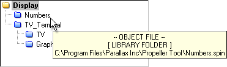

When our Display object is compiled, the Object View displays the structure shown below. This shows us that our Display object uses the Numbers and TV_Terminal objects and the TV_Terminal object uses the TV and Graphics objects.

Object View of Display Application
Yellow folders indicate objects in the “work” folder. Blue folders indicate objects in the “library” folder.
The folder icons in front of each object are different colors to indicate their individual folder locations. Objects with yellow folders are in the “work” folder while those with blue folders are in the “library” folder. From this display we can see that the Propeller Tool found the Numbers, TV_Terminal, TV and Graphics objects in the library folder and the Display object in the work folder.
Remember that we saved our Display object in the C:\Source folder? When an application is compiled, the folder that the top object file is stored within becomes known as the work folder. If that file refers to other objects, the work folder is the first place where the Propeller Tool looks for them. If the referenced object is not in the work folder, the library folder is searched next. If an object in the library folder refers to another object, the library folder is searched for that other object. An error occurs if referenced objects are not found in either the work folder or the library folder.
Due to this nature, it can be said that every application is composed entirely of files from as many as two folders; the work folder and/or the library folder. Keep this in mind while building your applications.
You can find out the location of each object, and the work and library folders, by pointing the mouse at each object in the Object View. In the figures below we see that Display is in C:\Source (the “work” folder) and Numbers is in C:\Program Files\Parallax Inc\Propeller Tool (the “library” folder).

Object View Hints for Display Application
The work and library folder paths can be seen in the hint messages

Propeller Help Version 1.2
Copyright © Parallax Inc., dba Parallax Semiconductor
6/17/2011